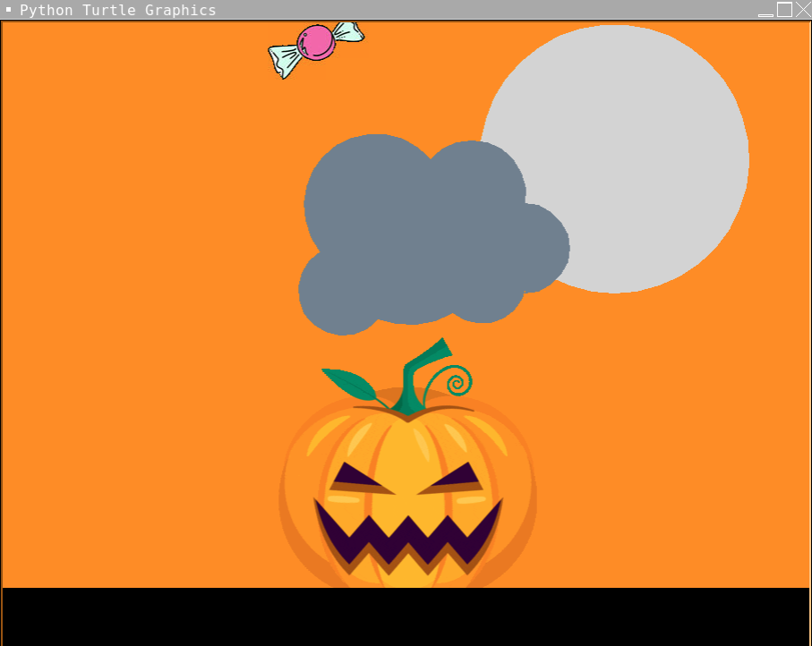
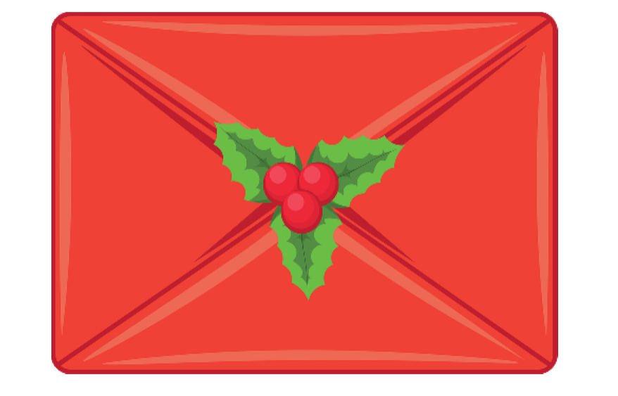
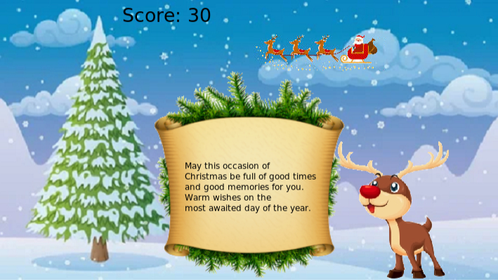
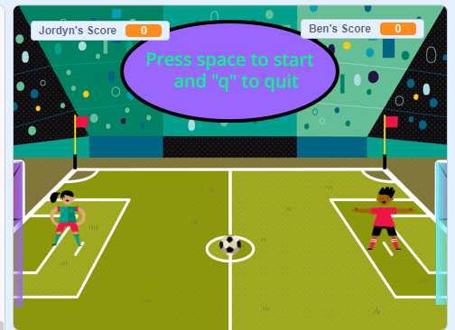
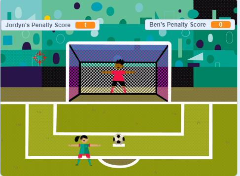

This is my Portfolio Page!
1.1.9 Project: Falling Candy

This is a halloween themed game that we designed. It allows the user to use left and right arrow key to move the pumpkin around to catch the candy. We used methods from 1.1.8 to make the candy fall down. And we designed the background with turtle and painter. We inserted image for the pumpkin and the candy.
1.2.5 Project: Tic Tac Toe

This is our project for 1.2.5. It's Tic Tac Toe and we switch the X and O into purple and yellow minion. We collect the input of the user and send the minions to the boxes. We also set up a function to check the winner. At the end, we show the score.
1.3.1 Project: Christmas Card
 
This is our project for 1.3.1. We decided to do a Christmas card for kids in the children's hospital. We designed a envelope and when you clicked it, it will appear a moving santa and a reindeer. There's a mini game, where you just click the santa. And when you click the reindeer, there will be a message appearing.
Scratch project: Soccer Game
 